Deep Q-Network (DQN)
First successful application of deep networks to RL
Value-based deep RL
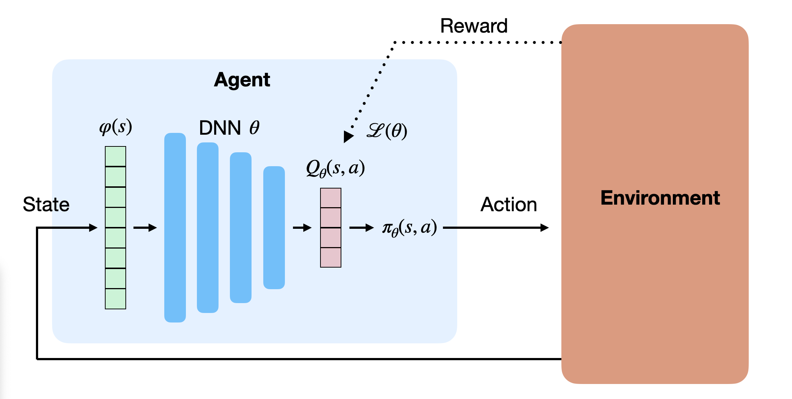
- The basic idea in value-based deep RL is to approximate the Q-values in each possible state, using a deep neural network with free parameters \(\theta\):
\[Q_\theta(s, a) \approx Q^\pi(s, a) = \mathbb{E}_\pi (R_t | s_t=s, a_t=a)\]
- The derived policy \(\pi_\theta\) uses for example an \(\epsilon\)-greedy or softmax action selection scheme over the estimated Q-values:
\[ \pi_\theta(s, a) \leftarrow \text{Softmax} (Q_\theta(s, a)) \]
Function approximators to learn the Q-values
There are two possibilities to approximate Q-values \(Q_\theta(s, a)\):
- The DNN approximates the Q-value of a single \((s, a)\) pair.
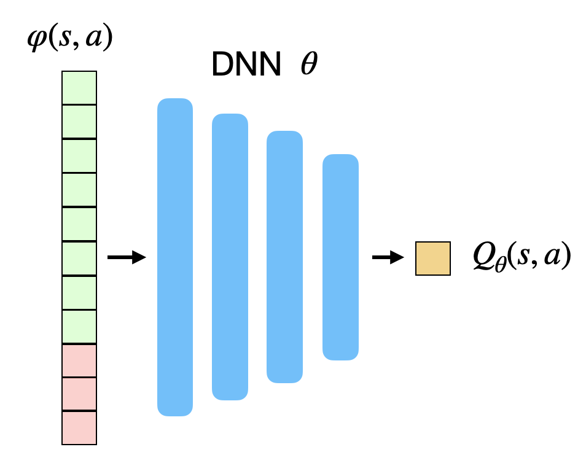
- The action space can be continuous.
- The DNN approximates the Q-value of all actions \(a\) in a state \(s\).
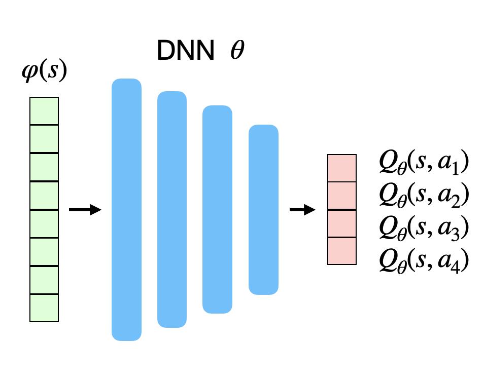
- The action space must be discrete (one neuron per action).
First naive approach: Q-learning with function approximation
We could simply adapt Q-learning with FA to the DNN:
Initialize the deep neural network with parameters \(\theta\).
Start from an initial state \(s_0\).
for \(t \in [0, T_\text{total}]\):
Select \(a_{t}\) using a softmax over the Q-values \(Q_\theta(s_t, a)\).
Take \(a_t\), observe \(r_{t+1}\) and \(s_{t+1}\).
Update the parameters \(\theta\) by minimizing the loss function:
\[\mathcal{L}(\theta) = (r_{t+1} + \gamma \, \max_{a'} Q_\theta(s_{t+1}, a') - Q_\theta(s_t, a_t))^2\]
- if \(s_t\) is terminal: sample another initial state \(s_0\).
Remark: We will now omit the break for terminal states, it is always implicitly here.
DNN need stochastic gradient descent
This naive approach will not work: DNNs cannot learn from single examples (online learning = instability).
DNNs require stochastic gradient descent (SGD):
\[ \mathcal{L}(\theta) = E_\mathcal{D} (||\textbf{t} - \textbf{y}||^2) \approx \frac{1}{K} \sum_{i=1}^K ||\textbf{t}_i - \textbf{y}_i||^2 \]
The loss function is estimated by sampling a minibatch of \(K\) i.i.d samples from the training set to compute the loss function and update the parameters \(\theta\).
This is necessary to avoid local minima of the loss function.
Although Q-learning can learn from single transitions, it is not possible using DNN.
Why not using the last \(K\) transitions to train the network? We could store them in a transition buffer and train the network on it.
Second naive approach: Q-learning with a transition buffer
Initialize the deep neural network with parameters \(\theta\).
Initialize an empty transition buffer \(\mathcal{D}\) of size \(K\): \(\{(s_k, a_k, r_k, s'_k)\}_{k=1}^K\).
for \(t \in [0, T_\text{total}]\):
Select \(a_{t}\) using a softmax over the Q-values \(Q_\theta(s_t, a)\).
Take \(a_t\), observe \(r_{t+1}\) and \(s_{t+1}\).
Store \((s_t, a_t, r_{t+1}, s_{t+1})\) in the transition buffer.
Every \(K\) steps:
- Update the parameters \(\theta\) using the transition buffer:
\[\mathcal{L}(\theta) = \frac{1}{K} \, \sum_{k=1}^K (r_k + \gamma \, \max_{a'} Q_\theta(s'_k, a') - Q_\theta(s_k, a_k))^2\]
- Empty the transition buffer.
Non-stationarity
- In SL, the targets \(\mathbf{t}\) do not change over time: an image of a cat stays an image of a cat throughout learning.
\[\mathcal{L}(\theta) = \mathbb{E}_{\mathbf{x}, \mathbf{t} \sim \mathcal{D}} [||\mathbf{t} - F_\theta(\mathbf{x})||^2]\]
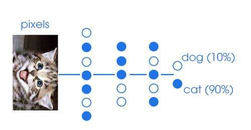
- The problem is said stationary, as the distribution of the data does not change over time.
Non-stationarity
In RL, the targets \(t = r + \gamma \, \max_{a'} Q_\theta(s', a')\) do change over time:
\(Q_\theta(s', a')\) depends on \(\theta\), so after one optimization step, all targets have changed!
As we improve the policy over training, we collect higher returns.
\[\mathcal{L}(\theta) = \mathbb{E}_{s, a \sim \pi_\theta} [(r + \gamma \, \max_{a'} Q_\theta(s', a') - Q_\theta(s, a))^2]\]
- NN do not like this. After a while, they give up and settle on a suboptimal policy.
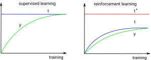
Illustration of non-stationary targets
- We want our value estimates to “catch” the true values.
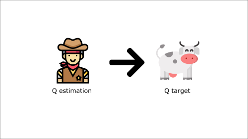
Illustration of non-stationary targets
- We update our estimate to come closer to the target.
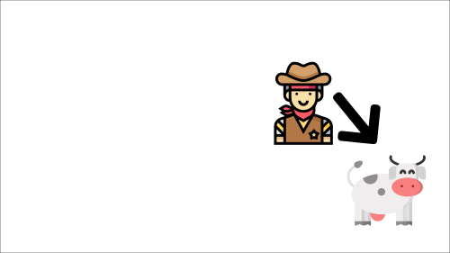
Illustration of non-stationary targets
- But the target moves! We need to update again.
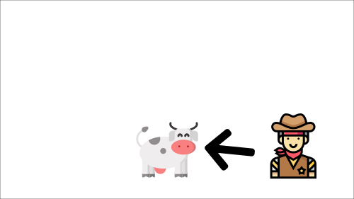
Illustration of non-stationary targets
- This leads to very strange and inefficient optimization paths.
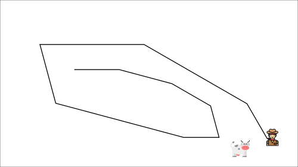
1 - Deep Q-networks (DQN)
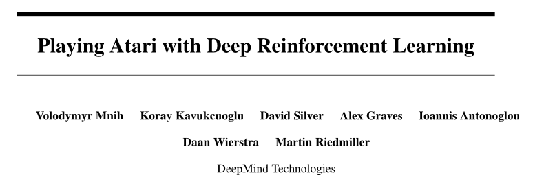
Problem with non-linear approximators and RL
Non-linear approximators never really worked with RL before 2013 because of:
The correlation between successive inputs or outputs.
The non-stationarity of the problem.
These two problems are very bad for deep networks, which end up overfitting the learned episodes or not learning anything at all.
Deepmind researchers proposed to use two classical ML tricks to overcome these problems:
experience replay memory.
target networks.
Experience replay memory
- To avoid correlation between samples, @Mnih2015 proposed to store the \((s, a, r, s')\) transitions in a huge experience replay memory or replay buffer \(\mathcal{D}\) (e.g. 1 million transitions).
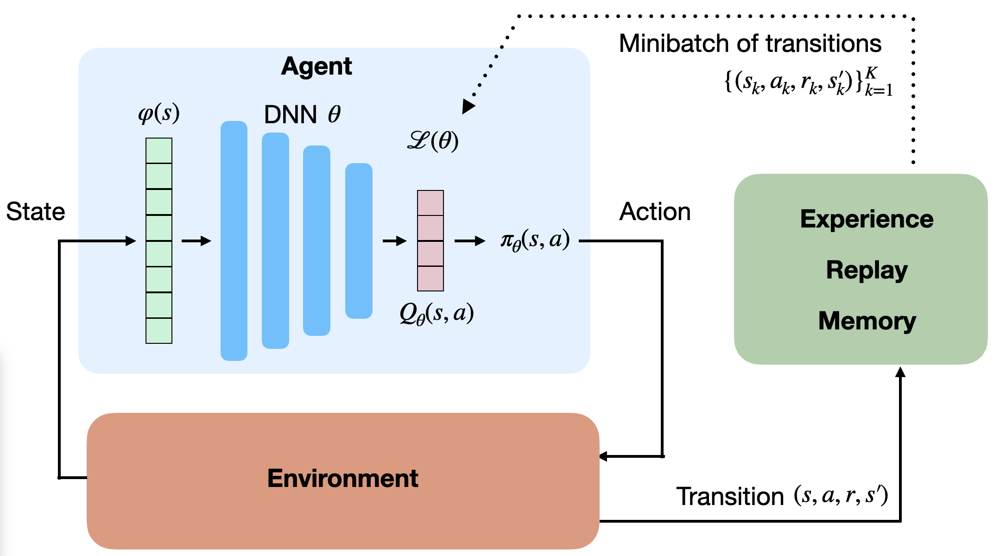
When the buffer is full, we simply overwrite old transitions.
The Q-learning update is only applied on a random minibatch of those past experiences, not the last transitions.
This ensures the independence of the samples (non-correlated samples).
Experience replay memory
Initialize value network \(Q_{\theta}\).
Initialize experience replay memory \(\mathcal{D}\) of maximal size \(N\).
for \(t \in [0, T_\text{total}]\):
Select an action \(a_t\) based on \(Q_\theta(s_t, a)\), observe \(s_{t+1}\) and \(r_{t+1}\).
Store \((s_t, a_t, r_{t+1}, s_{t+1})\) in the experience replay memory.
Every \(T_\text{train}\) steps:
Sample a minibatch \(\mathcal{D}_s\) randomly from \(\mathcal{D}\).
For each transition \((s_k, a_k, r_k, s'_k)\) in the minibatch:
- Compute the target value \(t_k = r_k + \gamma \, \max_{a'} Q_{\theta}(s'_k, a')\)
Update the value network \(Q_{\theta}\) on \(\mathcal{D}_s\) to minimize:
\[\mathcal{L}(\theta) = \mathbb{E}_{\mathcal{D}_s}[(t_k - Q_\theta(s_k, a_k))^2]\]
Experience replay memory
But wait! The samples of the minibatch are still not i.i.d, as they are not identically distributed:
Some samples were generated with a very old policy \(\pi_{\theta_0}\).
Some samples have been generated recently by the current policy \(\pi_\theta\).
The samples of the minibatch do not come from the same distribution, so this should not work.
Experience replay memory
- This should not work, except if you use an off-policy algorithm, such as Q-learning!
\[Q^\pi(s, a) = \mathbb{E}_{s_t \sim \rho_b, a_t \sim b}[ r_{t+1} + \gamma \, \max_a Q^\pi(s_{t+1}, a) | s_t = s, a_t=a]\]
- In Q-learning, you can take samples from any behavior policy \(b\), as long as the coverage assumption stands:
\[ \pi(s,a) > 0 \Rightarrow b(s,a) > 0\]
- Here, the behavior policy \(b\) is a kind of “superset” of all past policies \(\pi\) used to fill the ERM, so it “covers” the current policy.
\[b = \{\pi_{\theta_0}, \pi_{\theta_1}, \ldots, \pi_{\theta_t}\}\]
- Samples from \(b\) are i.i.d, so Q-learning is going to work.
Experience replay memory
- Note: it is not possible to use an experience replay memory with on-policy algorithms.
\[Q^\pi(s, a) = \mathbb{E}_{s_t \sim \rho_\pi, a_t \sim \pi}[ r_{t+1} + \gamma \, Q^\pi(s_{t+1}, a_{t+1}) | s_t = s, a_t=a]\]
\(a_{t+1} \sim \pi_\theta\) would not be the same between \(\pi_{\theta_0}\) (which generated the sample) and \(\pi_{\theta_t}\) (the current policy).
The estimated return \(r_{t+1} + \gamma \, Q^\pi(s_{t+1}, a_{t+1})\) would be biased, impairing convergence.
Target network
- The second problem when using DNN for RL is that the target is non-stationary, i.e. it changes over time: as the network becomes better, the Q-values have to increase.
- In DQN, the target for the update is not computed from the current deep network \(\theta\):
\[ r + \gamma \, \max_{a'} Q_\theta(s', a') \]
but from a target network \(\theta´\) updated only every few thousands of iterations.
\[ r + \gamma \, \max_{a'} Q_{\theta'}(s', a') \]
- \(\theta'\) is simply a copy of \(\theta\) from the past.
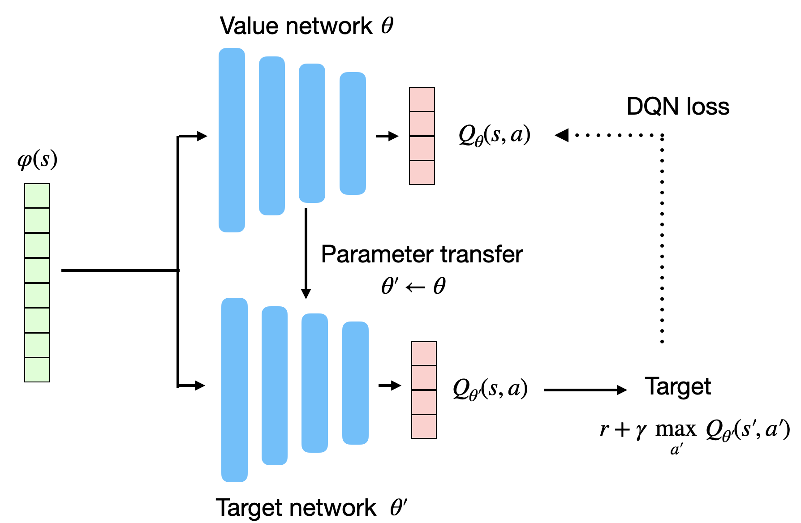
- DQN loss function:
\[ \mathcal{L}(\theta) = \mathbb{E}_\mathcal{D} [(r + \gamma \, \max_{a'} Q_{\theta'}(s', a')) - Q_\theta(s, a))^2] \]
Target network
This allows the target \(r + \gamma \, \max_{a'} Q_{\theta'}(s', a')\) to be stationary between two updates.
It leaves time for the trained network to catch up with the targets.
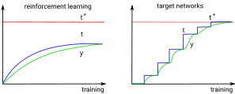
- The update is simply replacing the parameters \(\theta'\) with the trained parameters \(\theta\):
\[\theta' \leftarrow \theta\]
- The value network \(\theta\) basically learns using an older version of itself…
DQN: Deep Q-network
Initialize value network \(Q_{\theta}\) and target network \(Q_{\theta'}\).
Initialize experience replay memory \(\mathcal{D}\) of maximal size \(N\).
for \(t \in [0, T_\text{total}]\):
Select an action \(a_t\) based on \(Q_\theta(s_t, a)\), observe \(s_{t+1}\) and \(r_{t+1}\).
Store \((s_t, a_t, r_{t+1}, s_{t+1})\) in the experience replay memory.
Every \(T_\text{train}\) steps:
Sample a minibatch \(\mathcal{D}_s\) randomly from \(\mathcal{D}\).
For each transition \((s_k, a_k, r_k, s'_k)\) in the minibatch:
- Compute the target value \(t_k = r_k + \gamma \, \max_{a'} Q_{\theta'}(s'_k, a')\) using the target network.
Update the value network \(Q_{\theta}\) on \(\mathcal{D}_s\) to minimize:
\[\mathcal{L}(\theta) = \mathbb{E}_{\mathcal{D}_s}[(t_k - Q_\theta(s_k, a_k))^2]\]
Every \(T_\text{target}\) steps:
- Update target network: \(\theta' \leftarrow \theta\).
DQN: Deep Q-network
The deep network can be anything. Deep RL is only about defining the loss function adequately.
For pixel-based problems (e.g. video games), convolutional neural networks (without max-pooling) are the weapon of choice.
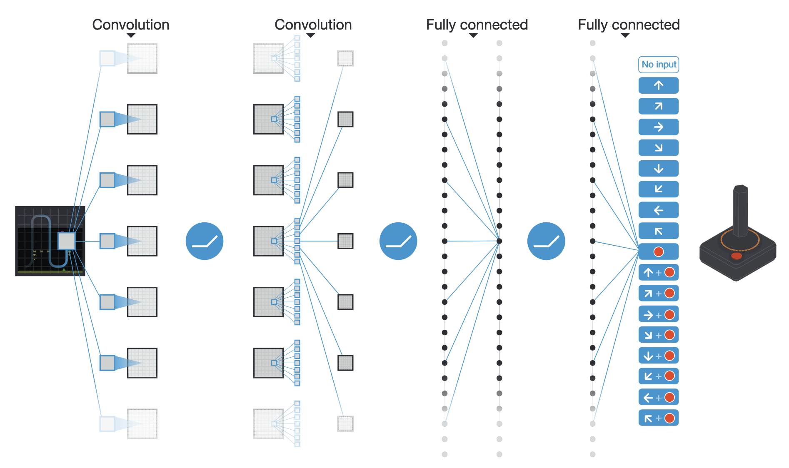
Why no max-pooling?
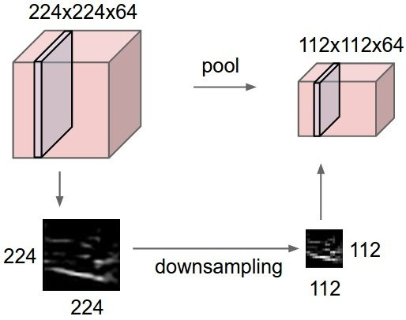
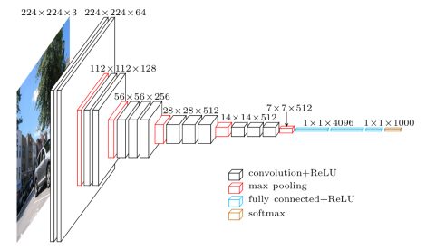
The goal of max-pooling is to get rid of the spatial information in the image.
For object recognition, you do not care whether the object is in the center or on the side of the image.
Max-pooling brings spatial invariance.
In video games, you want to keep the spatial information: the optimal action depends on where the ball is relative to the paddle.
Are individual frames good representations of states?
- Is the ball moving from the child to the baseball player, or the other way around?
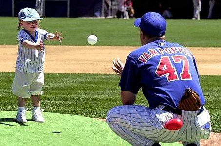
Using video frames as states breaks the Markov property: the speed and direction of the ball is a very relevant information for the task, but not contained in a single frame.
This characterizes a Partially-observable Markov Decision Process (POMDP).
Markov property in video games
The simple solution retained in the original DQN paper is to stack the last four frames to form the state representation.
Having the previous positions of the ball, the network can learn to infer its direction of movement.
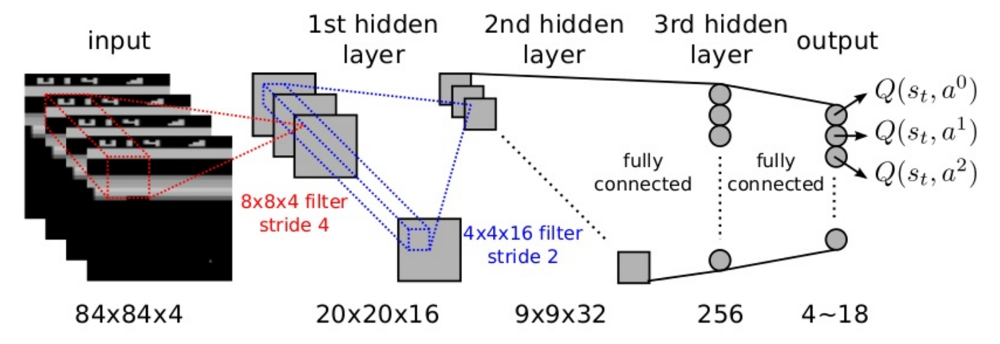
DQN training
50M frames (38 days of game experience) per game. Replay buffer of 1M frames.
Action selection: \(\epsilon\)-greedy with \(\epsilon = 0.1\) and annealing. Optimizer: RMSprop with a batch size of 32.
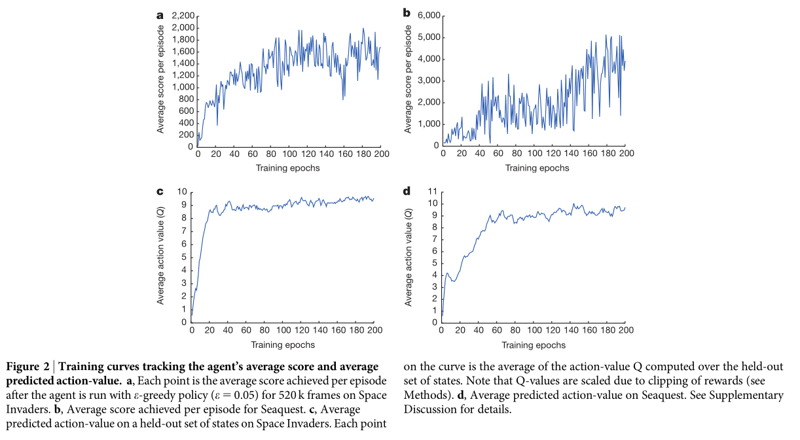
DQN to solve multiple Atari games
{{< youtube TmPfTpjtdgg >}}DQN to solve multiple Atari games
{{< youtube W2CAghUiofY >}}DQN to solve multiple Atari games
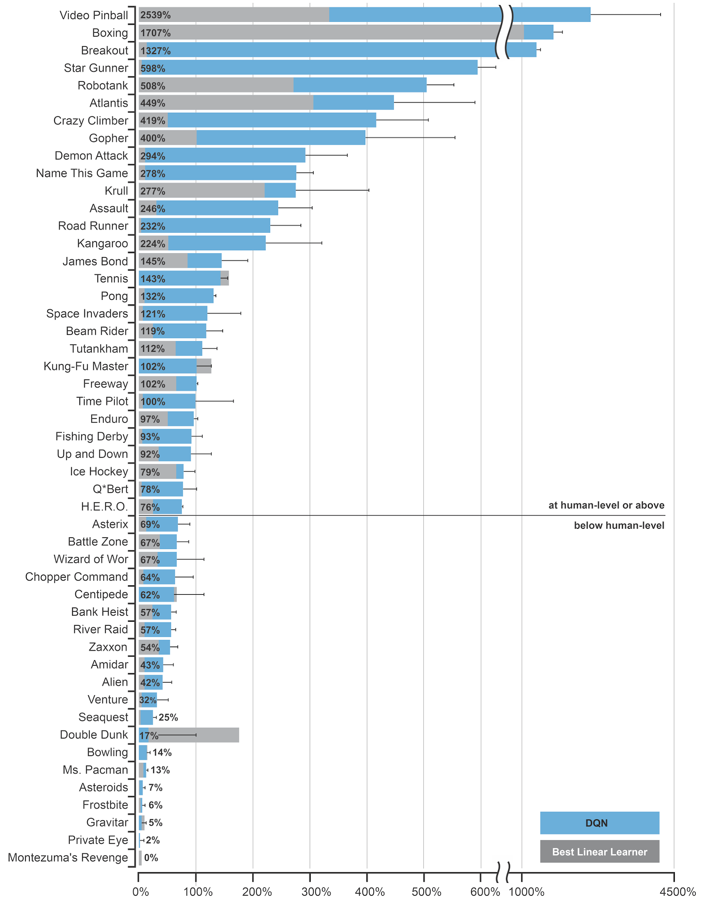
The DQN network was trained to solve 49 different Atari 2600 games with the same architecture and hyperparameters.
In most of the games, the network reaches super-human performance.
Some games are still badly performed (e.g. Montezuma’s revenge), as they require long-term planning.
It was the first RL algorithm able to learn different tasks (no free lunch theorem).
The 2015 paper in Nature started the hype for deep RL.
2 - Double DQN
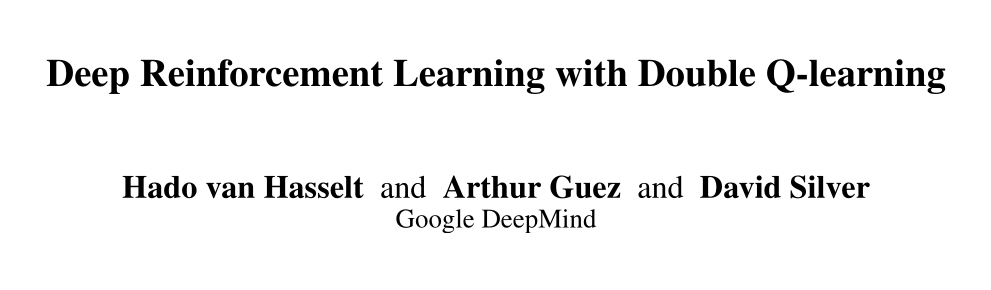
Double DQN
- Q-learning methods, including DQN, tend to overestimate Q-values, especially for the non-greedy actions:
\[Q_\theta(s, a) > Q^\pi(s, a)\]
- This does not matter much in action selection, as we apply \(\epsilon\)-greedy or softmax on the Q-values anyway, but it may make learning slower (sample complexity) and less optimal.
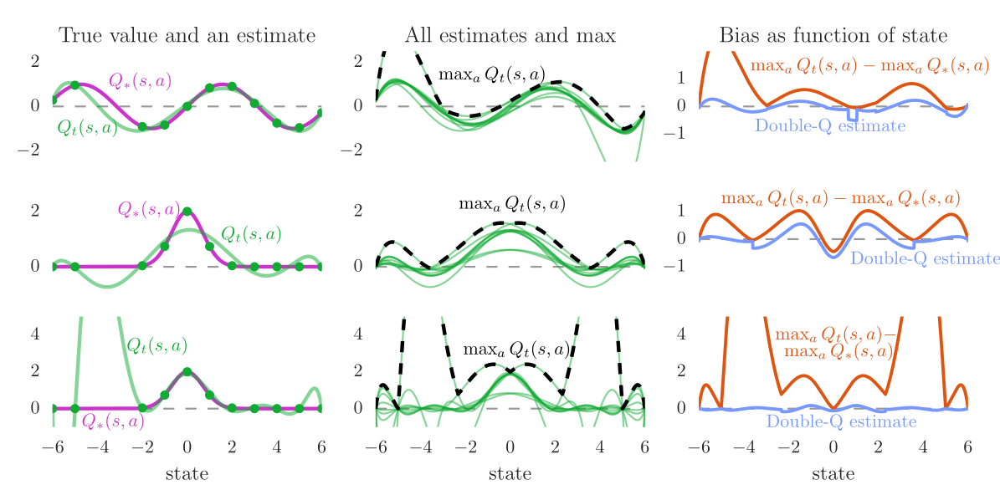
Double DQN
To avoid optimistic estimations, the target is computed by both the value network \(\theta\) and the target network \(\theta'\):
- Action selection: The next greedy action \(a^*\) is calculated by the value network \(\theta\) (current policy):
\[ a^* =\text{argmax}_{a'} Q_{\theta}(s', a') \]
- Action evaluation: Its Q-value for the target is calculated using the target network \(\theta'\) (older values):
\[ t = r + \gamma \, Q_{\theta'}(s´, a^*) \]
This gives the following loss function for double DQN (DDQN):
\[ \mathcal{L}(\theta) = \mathbb{E}_\mathcal{D} [(r + \gamma \, Q_{\theta'}(s´, \text{argmax}_{a'} Q_{\theta}(s', a')) - Q_\theta(s, a))^2] \]

3 - Prioritized Experience Replay
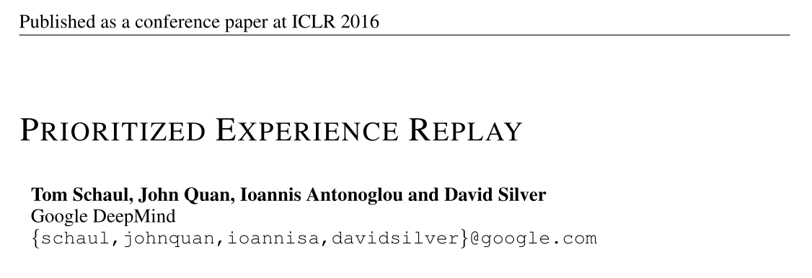
Prioritized Experience Replay
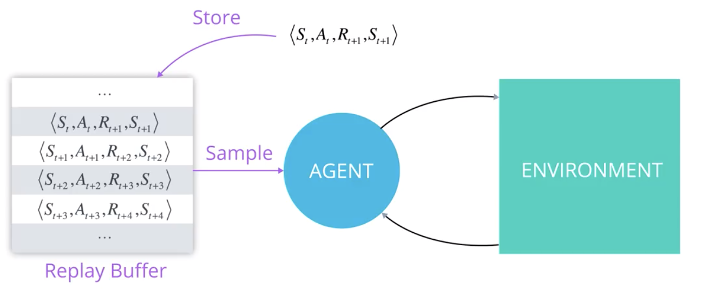
The experience replay memory or replay buffer is used to store the last 1M transitions \((s, a, r, s')\).
The learning algorithm randomly samples a minibatch of size \(K\) to update its parameters.
Not all transitions are interesting:
Some transitions were generated by a very old policy, the current policy won’t take them anymore.
Some transitions are already well predicted: the TD error is small, there is nothing to learn from.
\[\delta_t = r_{t+1} + \gamma \, \max_{a'} Q_\theta(s_{t+1}, a_{t+1}) - Q_\theta(s_t, a_t) \approx 0\]
Prioritized Experience Replay
The experience replay memory makes learning very slow: we need a lot of samples to learn something useful:
- High sample complexity.
We need a smart mechanism to preferentially pick the transitions that will boost learning the most, without introducing a bias.
- Prioritized sweeping is actually a quite old idea:
@Moore1993 Prioritized sweeping: Reinforcement learning with less data and less time. Machine Learning, 13(1):103–130.
Prioritized Experience Replay
- The idea of prioritized experience replay (PER) is to sample in priority those transitions whose TD error is the highest:
\[\delta_t = r_{t+1} + \gamma \, \max_{a'} Q_\theta(s_{t+1}, a_{t+1}) - Q_\theta(s_t, a_t)\]
In practice, we insert the transition \((s, a, r, s', \delta)\) into the replay buffer.
To create a minibatch, the sampling algorithm select a transition \(k\) based on the probability:
\[P(k) = \frac{(|\delta_k| + \epsilon)^\alpha}{\sum_k (|\delta_k| + \epsilon)^\alpha}\]
\(\epsilon\) is a small parameter ensuring that transition with no TD error still get sampled from time to time.
\(\alpha\) allows to change the behavior from uniform sampling (\(\alpha=0\), as in DQN) to fully prioritized sampling (\(\alpha=1\)). \(\alpha\) should be annealed from 0 to 1 during training.
Think of it as a “kind of” softmax over the TD errors.
After the samples have been used for learning, their TD error \(\delta\) is updated in the PER.
Prioritized Experience Replay
The main drawback is that inserting and sampling can be computationally expensive if we simply sort the transitions based on \((|\delta_k| + \epsilon)^\alpha\):
Insertion: \(\mathcal{O}(N \, \log N)\).
Sampling: \(\mathcal{O}(N)\).
Prioritized Experience Replay
Using binary sumtrees, prioritized experience replay can be made efficient in both insertion (\(\mathcal{O}(\log N)\)) and sampling (\(\mathcal{O}(1)\)).
Instead of a linear queue, we use a binary tree to store the transitions.
Details in a real computer science course…
Prioritized Experience Replay
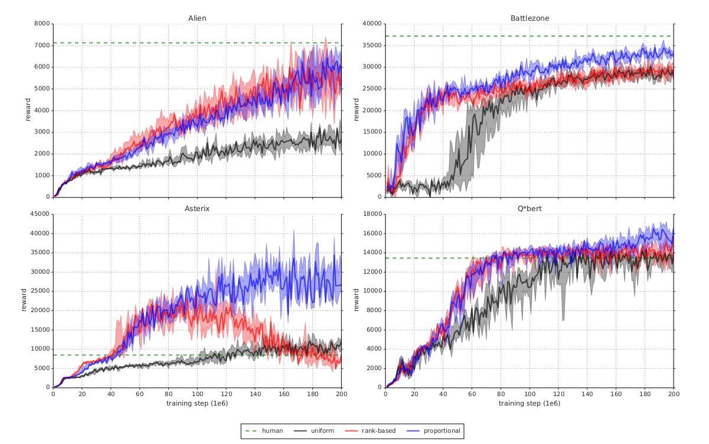
Prioritized Experience Replay

4 - Dueling networks
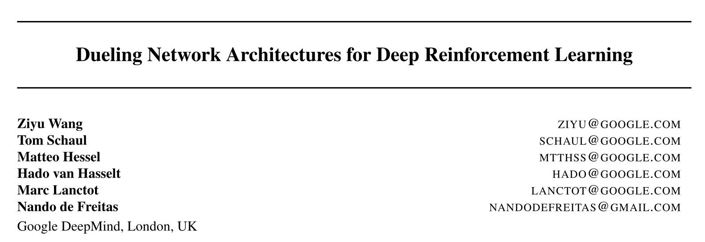
Dueling networks
- DQN and its variants learn to predict directly the Q-value of each available action.
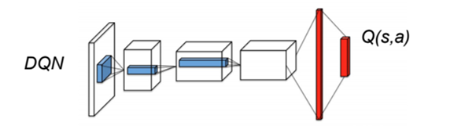
Several problems with predicting Q-values with a DNN:
The Q-values can take high values, especially with different values of \(\gamma\).
The Q-values have a high variance, between the minimum and maximum returns obtained during training.
For a transition \((s_t, a_t, s_{t+1})\), a single Q-value is updated, not all actions in \(s_t\).
Dueling networks
- Enduro game.
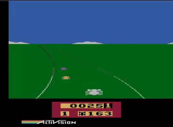

The exact Q-values of all actions are not equally important.
In bad states (low \(V^\pi(s)\)), you can do whatever you want, you will lose.
In neutral states, you can do whatever you want, nothing happens.
In good states (high \(V^\pi(s)\)), you need to select the right action to get rewards, otherwise you lose.
Advantage functions

- An important notion is the advantage \(A^\pi(s, a)\) of an action:
\[ A^\pi(s, a) = Q^\pi(s, a) - V^\pi(s) \]
It tells how much return can be expected by taking the action \(a\) in the state \(s\), compared to what is usually obtained in \(s\) with the current policy.
If a policy \(\pi\) is deterministic and always selects \(a^*\) in \(s\), we have:
\[ A^\pi(s, a^*) = 0 \] \[ A^\pi(s, a \neq a^*) < 0 \]
This is particularly true for the optimal policy.
But if we have separate estimates \(V_\varphi(s)\) and \(Q_\theta(s, a)\), some actions may have a positive advantage.
Advantages have less variance than Q-values.
Dueling networks
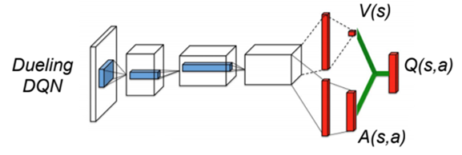
- In dueling networks, the network is forced to decompose the estimated Q-value \(Q_\theta(s, a)\) into a state value \(V_\alpha(s)\) and an advantage function \(A_\beta(s, a)\):
\[ Q_\theta(s, a) = V_\alpha(s) + A_\beta(s, a) \]
The parameters \(\alpha\) and \(\beta\) are just two shared subparts of the NN \(\theta\).
The loss function
\[\mathcal{L}(\theta) = \mathbb{E}_\mathcal{D} [(r + \gamma \, Q_{\theta'}(s´, \text{argmax}_{a'} Q_{\theta}(s', a')) - Q_\theta(s, a))^2]\]
is exactly the same as in (D)DQN: only the internal structure of the NN changes.
Unidentifiability
The Q-values are the sum of two functions: \(\; Q_\theta(s, a) = V_\alpha(s) + A_\beta(s, a)\)
However, the sum is unidentifiable:
\[ \begin{aligned} Q_\theta(s, a) = 10 & = 1 + 9 \\ & = 2 + 8 \\ & = 3 + 7 \\ \end{aligned} \]
- To constrain the sum, (Wang et al. 2016) propose that the greedy action w.r.t the advantages should have an advantage of 0:
\[ Q_\theta(s, a) = V_\alpha(s) + (A_\beta(s, a) - \max_{a'} A_\beta(s, a')) \]
This way, there is only one solution to the addition. The operation is differentiable, so backpropagation will work.
(Wang et al. 2016) show that subtracting the mean advantage works better in practice:
\[ Q_\theta(s, a) = V_\alpha(s) + (A_\beta(s, a) - \frac{1}{|\mathcal{A}|} \, \sum_{a'} A_\beta(s, a')) \]
Visualization of the value and advantage functions
- Which pixels change the most the value and advantage functions?
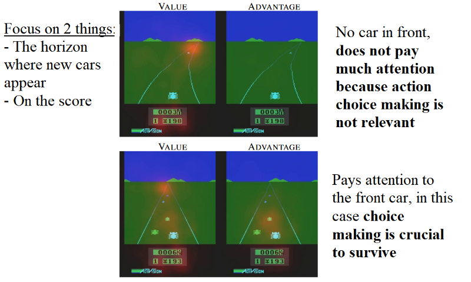
Improvement over prioritized DDQN

Summary of DQN
DQN and its early variants (double duelling DQN with PER) are an example of value-based deep RL.
The value \(Q_\theta(s, a)\) of each possible action in a given state is approximated by a convolutional neural network.
The NN has to minimize the mse between the predicted Q-values and the target value corresponding to the Bellman equation:
\[\mathcal{L}(\theta) = \mathbb{E}_\mathcal{D} [(r + \gamma \, Q_{\theta'}(s´, \text{argmax}_{a'} Q_{\theta}(s', a')) - Q_\theta(s, a))^2]\]
The use of an experience replay memory and of target networks allows to stabilize learning and avoid suboptimal policies.
The main drawback of DQN is sample complexity: it needs huge amounts of experienced transitions to find a correct policy. The sample complexity come from the deep network itself (gradient descent is iterative and slow), but also from the ERM: it contains 1M transitions, most of which are outdated.
Only works for small and discrete action spaces (one output neuron per action).